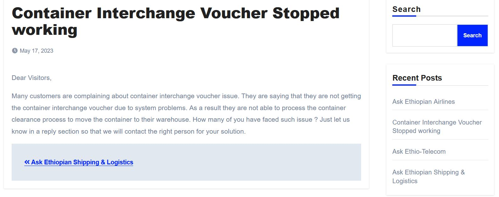
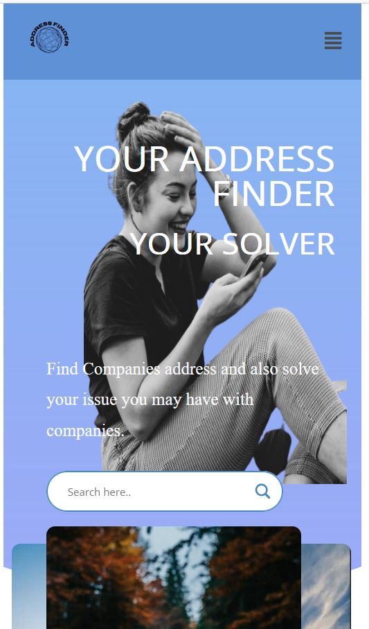
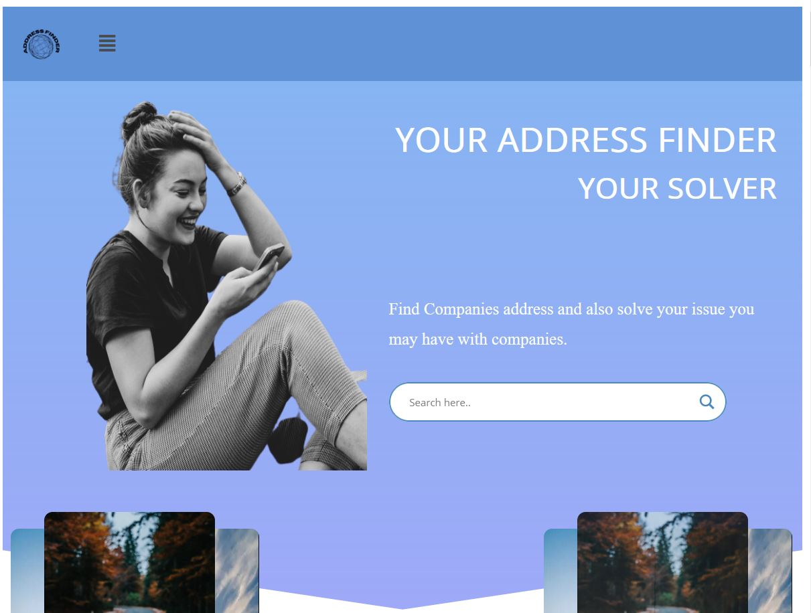

Address Finder
address finder & solver
Introduction
Address Finder
 In Ethiopia there are so many organization in different places. They can be
grouped as either private or governmental institution. Each of this organizations are established to give some services for the customer. The new customer may want
to contact some of these companies. For this, they may want the exact location, the contact address of the company. Here Address finder will help you find detail information.
Additionally, you may have unsolved issues with these companies which need to be escalated and fixed quickly as possible. Just post your issues on Address Finder. Address Finder
has a solution for it.
In Ethiopia there are so many organization in different places. They can be
grouped as either private or governmental institution. Each of this organizations are established to give some services for the customer. The new customer may want
to contact some of these companies. For this, they may want the exact location, the contact address of the company. Here Address finder will help you find detail information.
Additionally, you may have unsolved issues with these companies which need to be escalated and fixed quickly as possible. Just post your issues on Address Finder. Address Finder
has a solution for it.
Features
Some of the features that are covered by the Address Finder are described below in steps.
Information
Get information easily
In this part of the project, We have enabled the system to provide all infomation related to company easily. You can find detail information about the comany including its exact location, email address, phone numbers & company website address. All you have to do is, just visit the website and search for the company. All information which are relevant to the company is displayed properly. Google Map is integrated with the system to help you find the exact location of the comapny you are searching for.
Issue Solver
solve your issues you may have with this companies
One of the benefits that this Address Finder provides to vistor is its solving capabilities. Go & post your issues by searching the company that you want to be investigated. Our passionate officers will find your issues & do it for you. The officers will contact you once they checked that your issue is resonable & they will contact every one connecte to the issue.
Responsivness
Vist the website in your desktop, laptop, phone & any other devices
  In this part of the project, We have added the feature to the system that it is highly responsive. The user can use the favourite device to visit the website. It is highly made to be responsive so that the required contents are available in all devices. You can check its responsivness by visiting the website in desktop, laptop, tablet & mobile devices. You can also check for any available devices other than the one mentioned here. You will see that its are content displayed properly.
SEO Freindly
Search Engine optimized
The website is designed to be SEO freindly. The users can search our website in google search bar. Google knows it & it will include our website as your search result. All contents of the pages are designed as per SEO guidlines.
Fast response time
get fast result
The website is designed to be fastest to deliver the required information to the vistors. It's tested using global speed tester tools including Page speed insights, GTMetrix & pingdom. Its average response time is made to be slower.
Tools & frameworks
for the development of this project, I have used Wordpress & Elementor Page builder. Specifically, the following plugins & themes are are used in this project
- Blogus theme
- Elementor, Ajax Search Lite, All in One WP migration, CMP, Contact Form 7, Updraft Plus, Wordfence, WP-optimize, WPFront Scroll top, Yoast SEO plugins